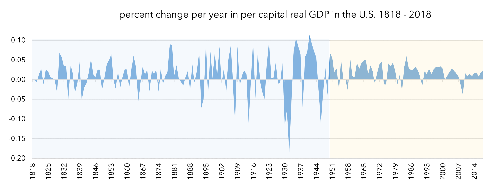
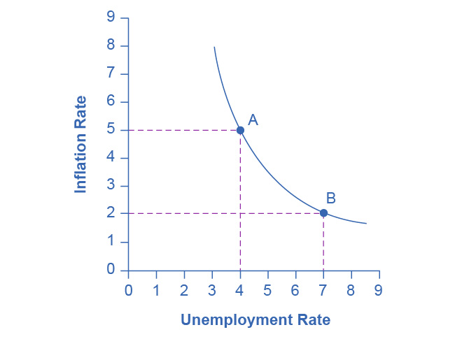
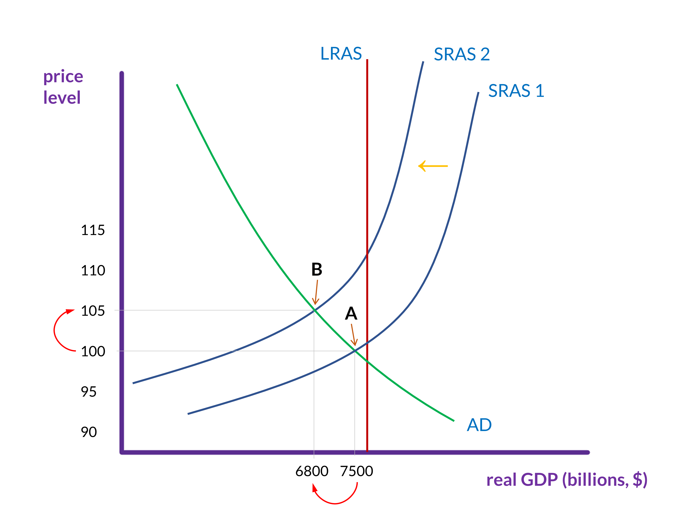

Automatic stabilizers and the Phillips curve
Automatic stabilizers
In the case of a recession, especially a severe one, Congress and the President can, and often will, implement new policies to increase aggregate demand and bring the country out of the recession. But some changes to taxes and spending happen automatically, without policymakers taking any new action. These automatic effects do not completely prevent recessions, but they seem to have minimized them since the end of the Great Depression. Here is how it works.
When aggregate demand is falling and the economy is at risk of entering a recession (or already has), the policy prescription is for an expansionary fiscal policy: some mix of tax cuts and spending increases. To an extent both happen automatically.
Low aggregate demand and higher unemployment lowers personal incomes and corporate profits, which automatically reduces the amount of taxes that are paid by individuals and by firms. (If a person’s income drops to $0, then, obviously, his or her income taxes will also be $0. If a person’s wage is lowered, then he or she may fall into a lower tax bracket, which means that the person will pay a smaller percentage of taxes on the highest part of his or her income.)
Higher unemployment also causes the government to increase its spending on unemployment benefits, food stamps (SNAP), temporary relief for needy families (TRNF), and Medicaid. These automatic changes will, to an extent, increase aggregate demand, or at least prevent it from decreasing too much.

A look at economic history provides an illustration of the power of automatic stabilizers. The chart in figure 1 shows the yearly percent change to per capita real GDP in the United States. The dips in the graph—that is, when the values are below 0.0—are when per capital real GDP has fallen relative to the previous year. These will, therefore, all be recessions. If we look at the frequency and the size of these negative values, we see that they have become much less frequent and smaller since 1950.
One reason why the economy has encountered recessions less frequently since then is because both the tax system and the government programs that serve as a safety net have expanded since the Great Depression. Consequently, even without policymakers doing anything, fiscal policies that adjust to changes in individuals’ economic situations are a countervailing force to declines in aggregate demand.
The Phillips curve
Consider the AD-AS model, when SRAS is constant and aggregate demand is either increasing or decreasing. If AD is increasing (i.e., shifting to the right), then unemployment is decreasing and the price level is increasing, which means there is inflation.
Conversely, if AD is decreasing (i.e., shifting to the left), then unemployment is increasing and the price level is falling, which means that there is deflation.
In the 1950s, A.W. Phillips, an economist at the London School of Economics, was studying the AD-AS model, which was still relatively new at the time, and he noticed this trade-off between unemployment and inflation. He analyzed 60 years of British data to see how accurate the model was on this point, and he found exactly what the model predicted.
This relationship between unemployment and inflation became known as the Phillips curve. The graph right below shows a theoretical Phillips curve with the rate of inflation and unemployment rate on the vertical and horizontal axes.

During the 1960s, economists viewed the Phillips curve as a policy menu. A nation could choose low inflation and high unemployment, or high inflation and low unemployment, or anywhere in between. Governments could use fiscal policy and monetary policy (which we will turn to next) to move up or down the Phillips curve as desired. This neat relationship only holds, however, when SRAS is roughly constant and aggregate demand is increasing or decreasing.

There is, of course, the scenario where aggregate demand is constant and SRAS is decreasing. The U.S. economy experienced this pattern in the deep recession from 1973 to 1975 and in back-to-back recessions from 1980 to 1982. Many nations around the world saw similar increases to both unemployment and inflation.
Recall from the section on Changes to AD and AS that SRAS will fall when the cost of inputs that are particularly important for many products increases. This happened in the mid-1970s when, over the course of a few years, the price of oil almost doubled.
In 1965, the British politician Iain Macleod coined the term stagflation: a combination of high unemployment and high inflation. This was a scenario that the Phillips curve implied was not possible. Perhaps most importantly, stagflation was a phenomenon that could not easily be fixed by manipulating aggregate demand.